Modulo 3 · Esercizio 6: Permessi del sito e delle librerie
Passo 1 · Verifica iniziale dei permessi di User03 (Member)
-
1. Accedere alla VM
SEA-DEV3con le credenziali di User03. -
2. Aprire Microsoft Edge e accedere all'indirizzo del sito:
-
3. Inserire le credenziali di User03 solo se richiesto (l'accesso dovrebbe avvenire in automatico via SSO).
- 4. Verificare che User03, in qualità di Member, possa attualmente:
- Accedere e caricare file in File Condivisi01 e File Condivisi02.
- Modificare le pagine del sito (Home Page e pagina "Novità Marketing").
- Creare nuovi contenuti: nuove pagine, nuove liste, nuove librerie.
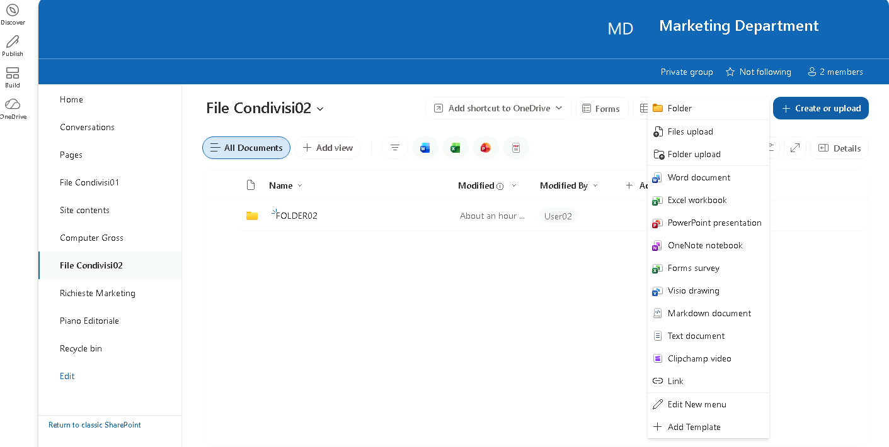
Passo 2 · Restrizione dei permessi a livello di sito (da Owner)
- 1. Accedere alla VM
SEA-DEV2con le credenziali di User02. - 2. Aprire Microsoft Edge e accedere allo stesso indirizzo del sito.
- 3. Selezionare la rotella delle impostazioni (in alto a destra) e scegliere Site permissions.
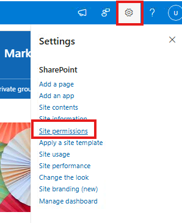
- 4. Individuare il gruppo Marketing Department Members e selezionare Edit permission level (o, tramite Advanced permissions settings, modificare il livello associato al gruppo).
- 5. Notare che nei Team site con gruppo Microsoft 365 non è possibile modificare direttamente i permessi del gruppo.
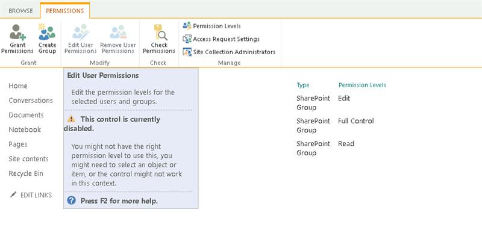
- 6. Per effettuare l'operazione e aggirare le limitazioni è necessario usare SharePoint Online Management Shell.
- 7. Aggiungere MOD Administrator ai Site Collection Administrators.
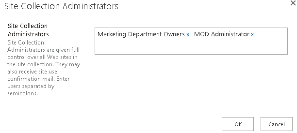
-
8. Andare su
SEA-DEV1con MOD Administrator aprire Visual Studio Code con il seguente script:Modulo3\Script\SPO.ps1.Seguire i seguenti comandi (doveTENANTè un segnaposto per il nome del proprio tenant) per cambiare i permessi al gruppo members. -
9. Installare il modulo SharePoint Online Management Shell (se non già presente).
- 10. Aggiornarlo per evitare problemi con gli Script.
- 11. Effettuare la connessione come amministratore.
Connect-SPOService -Url https://TENANT-admin.sharepoint.com -Credential admin@TENANT.onmicrosoft.com
- 12. Modificare i permessi del gruppo Members con il seguente comando:
Set-SPOSiteGroup `
-Site "https://TENANT.sharepoint.com/sites/MarketingDepartment" `
-Identity "Marketing Department Members" `
-PermissionLevelsToRemove "Edit" `
-PermissionLevelsToAdd "Contribute"
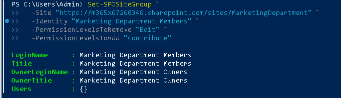
- 13. Per controllare che sia andato a buon fine eseguire il seguente script:
Get-SPOSiteGroup `
-Site "https://TENANT.sharepoint.com/sites/MarketingDepartment" `
-Group "Marketing Department Members" | Select Title, Roles
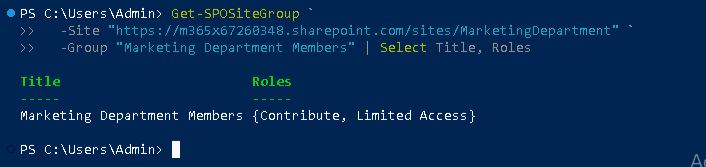
- 14. Per ulteriore conferma andare su Site permissions del sito e controllare che i Members abbiano il livello Contribute.
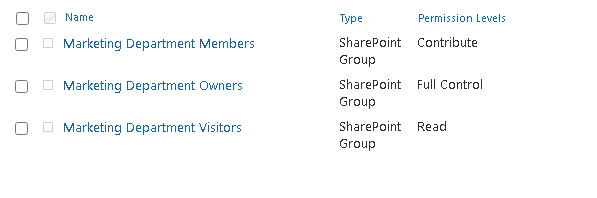
Nota
Livelli di autorizzazione predefiniti: Full Control (Owners), Edit (Members: possono anche creare/eliminare liste e librerie), Contribute (aggiungere/modificare/eliminare elementi ma non gestire liste), Read (Visitors).
Pericolo
Aggiungersi come Site Collection Administrator concede accesso completo a tutti i contenuti del sito. In produzione registrarlo come intervento amministrativo e rimuovere il ruolo al termine.
Passo 3 · Permessi univoci sulla libreria "File Condivisi02"
- 1. Aprire la libreria File Condivisi02.
- 2. Selezionare la rotella delle impostazioni e scegliere Library settings (Impostazioni raccolta).
- 3. Selezionare Permissions for this document library (Permessi per questa raccolta documenti).
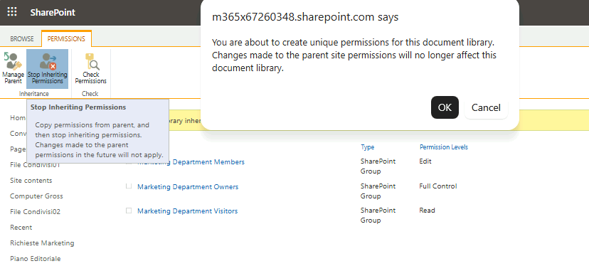
-
4. Selezionare Stop Inheriting Permissions (Interrompi ereditarietà) e confermare l'operazione.
-
5. Una volta interrotta l'ereditarietà, modificare il permesso assegnato al gruppo Marketing Department Members, impostandolo su Read, rimuovendo l'eventuale permesso di modifica precedentemente ereditato dal sito.
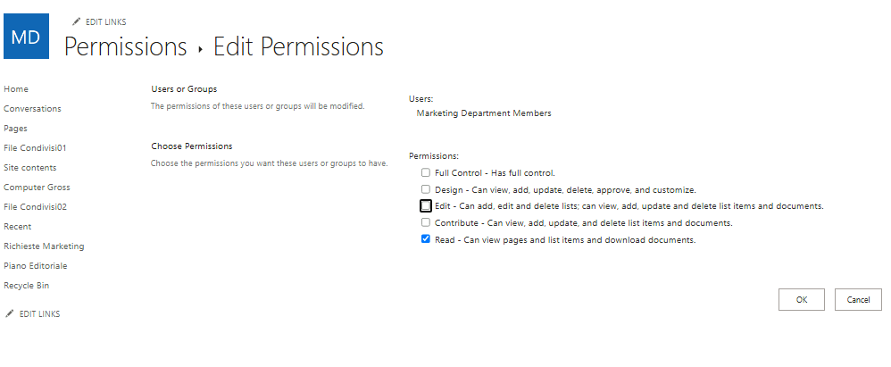
- 6. Salvare le modifiche.
Nota
Interrompere l'ereditarietà dei permessi (Stop Inheriting Permissions) rende una libreria (o lista, cartella, file) indipendente dalle impostazioni di permesso del sito principale: da questo momento, eventuali modifiche ai permessi del sito non si propagheranno più automaticamente a questa libreria.
Suggerimento
Rompere l'ereditarietà a livello di libreria è accettabile; evitare invece permessi univoci su molti singoli file o cartelle: rendono la gestione e l'audit difficili e possono degradare le prestazioni.
Passo 4 · Verifica lato User03 dopo le modifiche ai permessi
-
1. Accedere alla VM
SEA-DEV3con le credenziali di User03. -
2. Aprire Microsoft Edge e accedere allo stesso indirizzo del sito.
- 3. Verificare che User03 ora:
- Non possa più creare nuove liste, librerie o pagine dal sito (l'opzione + New risulta limitata o assente per queste azioni).
- Possa ancora aggiungere, modificare ed eliminare file all'interno di File Condivisi01 (permesso Contribute, ereditato dal sito).
- Possa solo visualizzare e scaricare i file in File Condivisi02, senza poter caricare, modificare o eliminare nulla (permesso Read Only, impostato con permessi univoci).
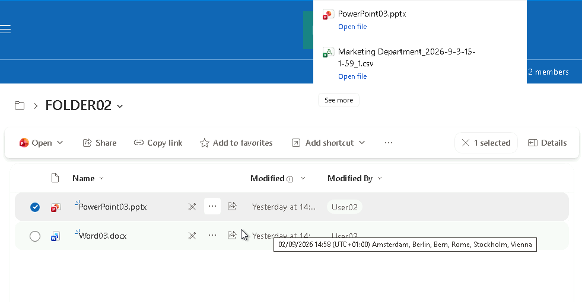
Passo 5 · Collegamento del sito a OneDrive lato User03
-
1. Sempre da
SEA-DEV3con User03, aprire il browser e accedere ahttps://portal.office.comoppure direttamente ahttps://tenant_name-my.sharepoint.comper aprire OneDrive sul Web. -
2. Nel menu laterale di OneDrive, verificare la presenza del sito Marketing Department tra i siti SharePoint a cui si ha accesso.
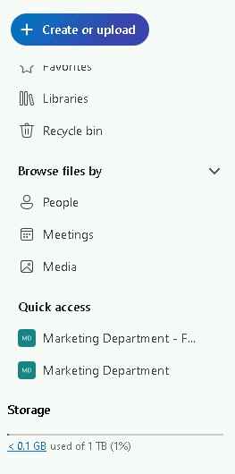
- 3. Tornare sul sito Marketing Department e aprire la libreria File Condivisi01.
- 4. Selezionare la libreria (o una cartella al suo interno) e scegliere i tre puntini (...) > Add shortcut to OneDrive -> My files.
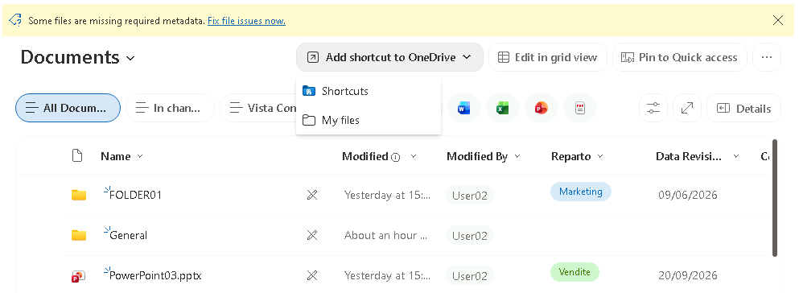
- 5. Confermare l'operazione: la libreria comparirà ora come collegamento (shortcut) nella sezione My files di OneDrive Web, contrassegnata da una piccola icona a forma di freccia.
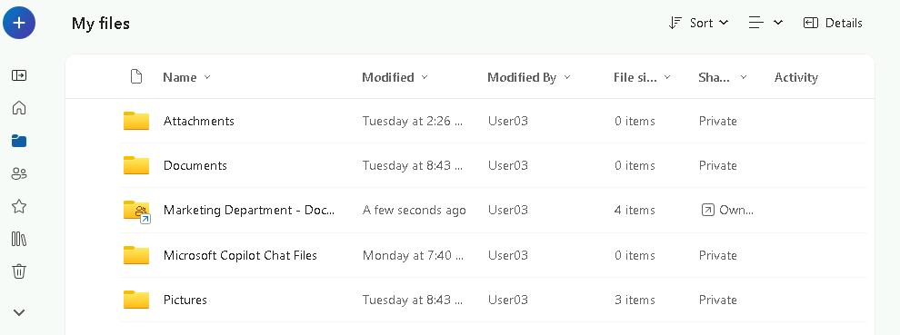
- 6. Verificare che, aprendo Esplora file sulla VM (con il client OneDrive desktop già configurato), la libreria compaia sotto OneDrive come una cartella con icona cloud (online-only), senza necessità di eseguire una sincronizzazione completa della libreria.
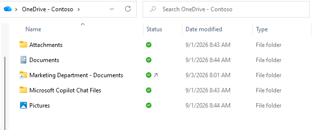